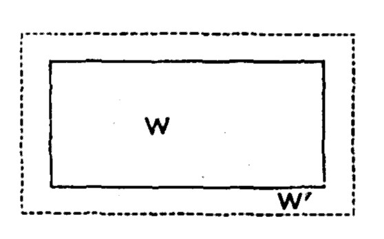
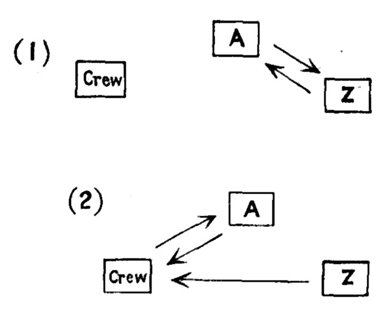

Chapter 4: Fundamental Propositions Respecting Capital¶
4.1 § 1. Industry is Limited by Capital¶
The first of these propositions is, that industry is limited by capital. To employ labor in a manufacture is to invest capital in the manufacture. This implies that industry can not be employed to any greater extent than there is capital to invest. The proposition, indeed, must be assented to as soon as it is distinctly apprehended. The expression “applying capital” is of course metaphorical: what is really applied is labor; capital being an indispensable condition. The food of laborers and the materials of production have no productive power; but labor can not exert its productive power unless provided with them. There can be no more industry than is supplied with materials to work up and food to eat. Self-evident as the thing is, it is often forgotten that the people of a country are maintained and have their wants supplied, not by the produce of present labor, but of past.
Therefore, as capital increases, more labor can be employed. When the Pittsburg rioters, in 1877, destroyed property, or the product of past labor, they did not realize then that that property might, but now could never again, be employed for productive purposes, and thereby support laborers.
They consume what has been produced, not what is about to be produced. Now, of what has been produced, a part only is allotted to the support of productive labor; and there will not and can not be more of that labor than the portion so allotted (which is the capital of the country) can feed, and provide with the materials and instruments of production.
Because industry is limited by capital, we are not, however, to infer that it always reaches that limit. There may not be as many laborers obtainable as the capital would maintain and employ. This has been known to occur in new colonies, where capital has sometimes perished uselessly for want of labor.
In the farming districts of our Middle and Western States, in harvest-time, crops have been often of late years ruined because farm-hands could not be obtained. In earlier days, President John Adams was unable to hire a man in Washington to cut wood in the surrounding forests with which to warm the White House.
The unproductive consumption of productive laborers, the whole of which is now supplied by capital, might cease, or be postponed, until the produce came in; and additional productive laborers might be maintained with the amount.
[Governments] can create capital. They may lay on taxes, and employ the amount productively. They may do what is nearly equivalent: they may lay taxes on income or expenditure, and apply the proceeds toward paying off the public debts. The fund-holder, when paid off, would still desire to draw an income from his property, most of which, therefore, would find its way into productive employment, while a great part of it would have been drawn from the fund for unproductive expenditure, since people do not wholly pay their taxes from what they would have saved, but partly, if not chiefly, from what they would have spent.
4.2 § 2. Increase of Capital gives Increased Employment to Labor, Without Assignable Bounds¶
While, on the one hand, industry is limited by capital, so, on the other, every increase of capital gives, or is capable of giving, additional employment to industry; and this without assignable limit. I do not mean to deny that the capital, or part of it, may be so employed as not to support laborers, being fixed in machinery, buildings, improvement of land, and the like. In any large increase of capital a considerable portion will generally be thus employed, and will only co-operate with laborers, not maintain them.
It will be remembered, however, that subsistence is but one part or element of capital; that instruments and materials form a large part of capital. But still the question of mere maintenance is rightfully discussed, because it is asserted to-day that, while the rich are growing richer, the poor lack even the food to keep them alive; and throughout this discussion Mr. Mill has in view the fact that laborers may exist in the community either “half fed or unemployed.”
What I do intend to assert is, that the portion which is destined to their maintenance may (supposing no alteration in anything else) be indefinitely increased, without creating an impossibility of finding the employment: in other words, that if there are human beings capable of work, and food to feed them, they may always be employed in producing something. It is very much opposed to common doctrines.1 There is not an opinion more general among mankind than this, that the unproductive expenditure of the rich is necessary to the employment of the poor.
It is to be noticed that, in fact, after the arts have so far advanced in a community that mankind can obtain by their exertion more than the amount of the mere necessaries of life sufficient on the average for the subsistence of all, any further production rendered possible to the human race by new discoveries and processes is naturally unproductively consumed, and that consequently a demand for labor for unproductive consumption is essential for the employment of all existing laborers. This, however, can be done, because enough capital has been brought into existence to create the demand for the labor. Yet it is clear that it is not expenditure, but capital, by which employment is given to the poor.
Suppose that every capitalist came to be of opinion that, not being more meritorious than a well-conducted laborer, he ought not to fare better; and accordingly laid by, from conscientious motives, the surplus of his profits; unproductive expenditure is now reduced to its lowest limit: and it is asked, How is the increased capital to find employment? Who is to buy the goods which it will produce? There are no longer customers even for those which were produced before. The goods, therefore (it is said), will remain unsold; they will perish in the warehouses, until capital is brought down to what it was originally, or rather to as much less as the demand of the customers has lessened. But this is seeing only one half of the matter. In the case supposed, there would no longer be any demand for luxuries on the part of capitalists and land-owners. But, when these classes turn their income into capital, they do not thereby annihilate their power of consumption; they do but transfer it from themselves to the laborers to whom they give employment. Now, there are two possible suppositions in regard to the laborers: either there is, or there is not, an increase of their numbers proportional to the increase of capital. (1.) If there is, the case offers no difficulty. The production of necessaries for the new population takes the place of the production of luxuries for a portion of the old, and supplies exactly the amount of employment which has been lost. (2.) But suppose that there is no increase of population. The whole of what was previously expended in luxuries, by capitalists and landlords, is distributed among the existing laborers, in the form of additional wages. We will assume them to be already sufficiently supplied with necessaries.
What follows? That the laborers become consumers of luxuries; and the capital previously employed in the production of luxuries is still able to employ itself in the same manner; the difference being, that the luxuries are shared among the community generally, instead of being confined to a few, supposing that the power of their labor were physically sufficient to produce all this amount of indulgences for their whole number. Thus the limit of wealth is never deficiency of consumers, but of producers and productive power. Every addition to capital gives to labor either additional employment or additional remuneration.
That laborers should get more (a) by capitalists abstaining from unproductive expenditure than (b) by expenditure in articles unproductively consumed is a question difficult for many to comprehend, and needs all the elucidation possible. To start with, no one ever knew of a community all of whose wants were satisfied: in fact, civilization is constantly leading us into new fields of enjoyment, and results in a constant differentiation of new desires. To satisfy these wants is the spring to nearly all production and industry. There can, therefore, be no stop to production arising from lack of desire for commodities. “The limit of wealth is never deficiency of consumers,” but of productive power.
Now, in supposition (2) of the text, remember that the laborers are supposed not to be employed up to their full productive power. If all capitalists abstain from unproductive consumption, and devote that amount of wealth to production, then, since there can be no production without labor, the same number of laborers have offered to them in the aggregate a larger sum of articles for their exertions, which is equivalent to saying they receive additional wages.
But some persons want to see the process in the concrete, and the same principle may be illustrated by a practical case. It is supposed that all laborers have the necessaries of life only, but none of the comforts, decencies, and luxuries. Let A be a farmer in New York, who can also weave carpets, and B a lumberman in Maine. A begins to want a better house, and B wishes a carpet, both having food, clothing, and shelter. One of the capitalists abstaining from unproductive consumption, as above, is X, who, knowing the two desires of A and B, presents himself as a middle-man (i.e., he gives a market for both men, as is found in every center of trade, as well as in a country store), furnishing A the tools, materials, etc., and giving him the promise of lumber if he will create the carpet, and promising B the carpet if he will likewise produce the additional lumber. To be more matter of fact, X buys the carpet of A, and sells it to B for the lumber. Thus two new articles have been created, and for their exertions A has received additional wages (either in the form of lumber, or of the money paid him for the carpet), and B has received additional wages (either in the form of a carpet, or the money paid him by X for the lumber). If A and B are regarded as typifying all the laborers, and X all the above capitalists, in the multiplicity of actual exchanges, it will be seen that A and B are creating new articles to satisfy their own demand, instead of meeting the demands of X. If their primary wants are already supplied, then they take their additional wages in the form of comforts and decencies. When Class X forego their consumption, but add that amount to capital, they do not give up their title to that capital, but they transfer the use of it, or their consuming power, to others for the time being. This question will be more fully discussed in § 6.
4.3 § 3. Capital is the result of Saving, and all Capital is Consumed¶
A second fundamental theorem respecting capital relates to the source from which it is derived. It is the result of saving.
If all persons were to expend in personal indulgences all that they produce, and all the income that they receive from what is produced by others, capital could not increase. Some saving, therefore, there must have been, even in the simplest of all states of economical relations; people must have produced more than they used, or used less than they produced. Still more must they do so before they can employ other laborers, or increase their production beyond what can be accomplished by the work of their own hands. If it were said, for instance, that the only way to accelerate the increase of capital is by increase of saving, the idea would probably be suggested of greater abstinence and increased privation. But it is obvious that whatever increases the productive power of labor, creates an additional fund to make savings from, and enables capital to be enlarged, not only without additional privation, but concurrently with an increase of personal consumption. Nevertheless, there is here an increase of saving, in the scientific sense. Though there is more consumed, there is also more spared. There is a greater excess of production over consumption. To consume less than is produced is saving; and that is the process by which capital is increased; not necessarily by consuming less, absolutely.
The economic idea of saving involves, of course, the intention of using the wealth in reproduction. Saving, without this meaning, results only in hoarding of wealth, and while hoarded this amount is not capital. To explain the process by which capital comes into existence, Bastiat has given the well-known illustration of the plane in his “Sophisms of Protection.”2
A fundamental theorem respecting capital, closely connected with the one last discussed, is, that although saved, and the result of saving, it is nevertheless consumed. The word saving does not imply that what is saved is not consumed, nor even necessarily that its consumption is deferred; but only that, if consumed immediately, it is not consumed by the person who saves it. If merely laid by for future use, it is said to be hoarded; and, while hoarded, is not consumed at all. But, if employed as capital, it is all consumed, though not by the capitalist. Part is exchanged for tools or machinery, which are worn out by use; part for seed or materials, which are destroyed as such by being sown or wrought up, and destroyed altogether by the consumption of the ultimate product. The remainder is paid in wages to productive laborers, who consume it for their daily wants; or if they in their turn save any part, this also is not, generally speaking, hoarded, but (through savings-banks, benefit clubs, or some other channel) re-employed as capital, and consumed. To the vulgar, it is not at all apparent that what is saved is consumed. To them, every one who saves appears in the light of a person who hoards. The person who expends his fortune in unproductive consumption is looked upon as diffusing benefits all around, and is an object of so much favor, that some portion of the same popularity attaches even to him who spends what does not belong to him; who not only destroys his own capital, if he ever had any, but, under pretense of borrowing, and on promise of repayment, possesses himself of capital belonging to others, and destroys that likewise.
This popular error comes from attending to a small portion only of the consequences that flow from the saving or the spending; all the effects of either, which are out of sight, being out of mind. There is, in the one case, a wearing out of tools, a destruction of material, and a quantity of food and clothing supplied to laborers, which they destroy by use; in the other case, there is a consumption, that is to say, a destruction, of wines, equipages, and furniture. Thus far, the consequence to the national wealth has been much the same; an equivalent quantity of it has been destroyed in both cases. But in the spending, this first stage is also the final stage; that particular amount of the produce of labor has disappeared, and there is nothing left; while, on the contrary, the saving person, during the whole time that the destruction was going on, has had laborers at work repairing it; who are ultimately found to have replaced, with an increase, the equivalent of what has been consumed.
Almost all expenditure being carried on by means of money, the money comes to be looked upon as the main feature in the transaction; and since that does not perish, but only changes hands, people overlook the destruction which takes place in the case of unproductive expenditure. The money being merely transferred, they think the wealth also has only been handed over from the spendthrift to other people. But this is simply confounding money with wealth. The wealth which has been destroyed was not the money, but the wines, equipages, and furniture which the money purchased; and, these having been destroyed without return, society collectively is poorer by the amount. In proportion as any class is improvident or luxurious, the industry of the country takes the direction of producing luxuries for their use; while not only the employment for productive laborers is diminished, but the subsistence and instruments which are the means of such employment do actually exist in smaller quantity.
4.4 § 4. Capital is kept up by Perpetual Reproduction, as shown by the Recovery of Countries from Devastation¶
To return to our fundamental theorem. Everything which is produced is consumed—both what is saved and what is said to be spent—and the former quite as rapidly as the latter. All the ordinary forms of language tend to disguise this. When people talk of the ancient wealth of a country, of riches inherited from ancestors, and similar expressions, the idea suggested is, that the riches so transmitted were produced long ago, at the time when they are said to have been first acquired, and that no portion of the capital of the country was produced this year, except as much as may have been this year added to the total amount. The fact is far otherwise. The greater part, in value, of the wealth now existing [in the United States] has been produced by human hands within the last twelve months.
“In the State of Massachusetts it is estimated that the capital, on the average, belonging to each individual does not exceed $600, and that the average annual product per capita is about $200; so that the total capital is the product of only two or three years' labor.”3
The land subsists, and the land is almost the only thing that subsists. Everything which is produced perishes, and most things very quickly. Most kinds of capital are not fitted by their nature to be long preserved. Westminster Abbey has lasted many centuries, with occasional repairs; some Grecian sculptures have existed above two thousand years; the Pyramids perhaps double or treble that time. But these were objects devoted to unproductive use. Capital is kept in existence from age to age not by preservation, but by perpetual reproduction; every part of it is used and destroyed, generally very soon after it is produced, but those who consume it are employed meanwhile in producing more. The growth of capital is similar to the growth of population. Every individual who is born, dies, but in each year the number born exceeds the number who die; the population, therefore, always increases, though not one person of those composing it was alive until a very recent date.
This perpetual consumption and reproduction of capital afford the explanation of what has so often excited wonder, the great rapidity with which countries recover from a state of devastation. The possibility of a rapid repair of their disasters mainly depends on whether the country has been depopulated. If its effective population have not been extirpated at the time, and are not starved afterward, then, with the same skill and knowledge which they had before, with their land and its permanent improvements undestroyed, and the more durable buildings probably unimpaired, or only partially injured, they have nearly all the requisites for their former amount of production. If there is as much of food left to them, or of valuables to buy food, as enables them by any amount of privation to remain alive and in working condition, they will, in a short time, have raised as great a produce, and acquired collectively as great wealth and as great a capital, as before, by the mere continuance of that ordinary amount of exertion which they are accustomed to employ in their occupations. Nor does this evince any strength in the principle of saving, in the popular sense of the term, since what takes place is not intentional abstinence, but involuntary privation.
The world has at any given period the power, under existing conditions of production and skill, to create a certain amount of wealth, as represented by the inner rectangle, W. Each increased power of production arising from conquests over Nature's forces, as the use of steam and labor-saving machinery, permits the total wealth to be enlarged, as, in the figure, to rectangle W'. For the production of wealth are required labor, capital, and land; therefore, if the labor and land are not destroyed by war, there need not necessarily be in existence all the previous capital. If there are the necessaries for all, and only sufficient tools to accomplish the work, they will, in a few years, again recreate all the wealth that formerly existed, regain the same position as before, and go on slowly increasing the total wealth just as fast as improvements in the arts of production render it possible.

4.5 § 5. Effects of Defraying Government Expenditure by Loans¶
[An application of this truth has been made to the question of raising government supplies for war purposes.] Loans, being drawn from capital (in lieu of taxes, which would generally have been paid from income, and made up in part or altogether by increased economy), must, according to the principles we have laid down, tend to impoverish the country: yet the years in which expenditure of this sort has been on the greatest scale have often been years of great apparent prosperity: the wealth and resources of the country, instead of diminishing, have given every sign of rapid increase during the process, and of greatly expanded dimensions after its close.
During our civil war, at the same time that wealth was being destroyed on an enormous scale, there was a very general feeling that trade was good, and large fortunes were made. At the close of the war a period of speculation and overtrading continued until it was brought to a disastrous close by the panic of 1873. Much of this speculation, however, was due to an inflated paper currency.
We will suppose the most unfavorable case possible: that the whole amount borrowed and destroyed by the Government was abstracted by the lender from a productive employment in which it had actually been invested. The capital, therefore, of the country, is this year diminished by so much. But, unless the amount abstracted is something enormous, there is no reason in the nature of the case why next year the national capital should not be as great as ever. The loan can not have been taken from that portion of the capital of the country which consists of tools, machinery, and buildings. It must have been wholly drawn from the portion employed in paying laborers: and the laborers will suffer accordingly. But if none of them are starved, if their wages can bear such an amount of reduction, or if charity interposes between them and absolute destitution, there is no reason that their labor should produce less in the next year than in the year before. If they produce as much as usual, having been paid less by so many millions sterling, these millions are gained by their employers. The breach made in the capital of the country is thus instantly repaired, but repaired by the privations and often the real misery of the laboring-class.
As Mr. Mill points out, during the Napoleonic wars, in France the withdrawal of laborers from industry into the army was so large that it caused a rise of wages, and a fall in the profits of capital; while in England, inasmuch as capital, rather than men, was sent to the Continent in the war, the very reverse took place: the diversion of “hundreds of millions of capital from productive employment” caused a fall of wages, and the prosperity of the capitalist class, while the permanent productive resources did not fall off.
This leads to the vexed question to which Dr. Chalmers has very particularly adverted: whether the funds required by a government for extraordinary unproductive expenditure are best raised by loans, the interest only being provided by taxes, or whether taxes should be at once laid on to the whole amount; which is called, in the financial vocabulary, raising the whole of the supplies within the year. Dr. Chalmers is strongly for the latter method. He says the common notion is that, in calling for the whole amount in one year, you require what is either impossible, or very inconvenient; that the people can not, without great hardship, pay the whole at once out of their yearly income; and that it is much better to require of them a small payment every year in the shape of interest, than so great a sacrifice once for all. To which his answer is, that the sacrifice is made equally in either case. Whatever is spent can not but be drawn from yearly income. The whole and every part of the wealth produced in the country forms, or helps to form, the yearly income of somebody. The privation which it is supposed must result from taking the amount in the shape of taxes is not avoided by taking it in a loan. The suffering is not averted, but only thrown upon the laboring-classes, the least able, and who least ought, to bear it: while all the inconveniences, physical, moral, and political, produced by maintaining taxes for the perpetual payment of the interest, are incurred in pure loss. Whenever capital is withdrawn from production, or from the fund destined for production, to be lent to the state and expended unproductively, that whole sum is withheld from the laboring-classes: the loan, therefore, is in truth paid off the same year; the whole of the sacrifice necessary for paying it off is actually made: only it is paid to the wrong persons, and therefore does not extinguish the claim; and paid by the very worst of taxes, a tax exclusively on the laboring-class. And, after having, in this most painful and unjust of ways, gone through the whole effort necessary for extinguishing the debt, the country remains charged with it, and with the payment of its interest in perpetuity.
The United States, for example, borrows capital from A, with which it buys stores from B. If the loan all comes from within the country, A's capital is borrowed, when the United States should have taken that amount outright by taxation. When the money is borrowed of A, the laborers undergo the sacrifice, the title to the whole sum remains in A's hands, and the claim against the Government by A still exists; while, if the amount were taken by taxation, the title to the sum raised is in the state, and it is paid to the right person.
The experience of the United States during the civil war is an illustration of this principle. It is asserted that, as a matter of fact, the total expenses of the war were defrayed by the Northern States, during the four years of its continuance, out of surplus earnings; and yet at the close of the conflict a debt of $2,800,000,000 was saddled on the country.
| The United States borrowed | $2,400,000,000 |
|---|---|
| Revenue during that time | 1,700,000,000 |
| Total cost of the war | $4,100,000,000 |
In reality we borrowed only about $1,500,000,000 instead of $2,400,000,000, since (1) the Government issued paper which depreciated, and yet received it at par in subscriptions for loans. Moreover, the total cost would have been much reduced had we issued no paper and (2) thereby not increased the prices of goods to the state, and (3) if no interest account had been created by borrowing. But could the country have raised the whole sum each year by taxation? In the first fiscal year after the war the United States paid in war taxes $650,000,000. At the beginning of the struggle, to June 30, 1862, the expenditure was $515,000,000, and by June 30, 1863, it had amounted to $1,098,000,000; so that $600,000,000 of taxes a year would have paid the war expenses, and left us free of debt at the close.
A confirmatory experience is that of England during the Continental wars, 1793-1817:
| Total war expenditures | £1,060,000,000 |
|---|---|
| Interest charge on the existing debt | 235,000,000 |
| Total amount required | £1,295,000,000 |
| Revenue for that period | 1,145,000,000 |
| Deficit | £150,000,000 |
To provide for this deficit, the Government actually increased its debt by £600,000,000. A slight additional exertion would have provided £150,000,000 more of revenue, and saved £450,000,000 to the taxpayers.4
The practical state of the case, however, seldom exactly corresponds with this supposition. The loans of the less wealthy countries are made chiefly with foreign capital, which would not, perhaps, have been brought in to be invested on any less security than that of the Government: while those of rich and prosperous countries are generally made, not with funds withdrawn from productive employment, but with the new accumulations constantly making from income, and often with a part of them which, if not so taken, would have migrated to colonies, or sought other investments abroad.
4.6 § 6. Demand for Commodities is not Demand for Labor¶
Mr. Mill's statement of the theorem respecting capital, discussed in the argument that “demand for commodities is not demand for labor,” needs some simplification. For this purpose represent by the letters of the alphabet, A, B, C, ... X, Y, Z, the different kinds of commodities produced in the world which are exchanged against each other in the process of reaching the consumers. This exchange of commodities for each other, it need hardly be said, does not increase the number or quantity of commodities already in existence; since their production, as we have seen, requires labor and capital in connection with natural agents. Mere exchange does not alter the quantity of commodities produced.
To produce a plow, for example, the maker must have capital (in the form of subsistence, tools, and materials) of which some one has foregone the use by a process of saving in order that something else, in this case a plow, may be produced. This saving must be accomplished first to an amount sufficient to keep production going on from day to day. This capital is all consumed, but in a longer or shorter term (depending on the particular industrial operation) it is reproduced in new forms adapted to the existing wants of man. Moreover, without any new exertion of abstinence, this amount of capital may be again consumed and reproduced, and so go on forever, after once being saved (if never destroyed in the mean while, thereby passing out of the category not only of capital, but also of wealth). The total capital of the country, then, is not the sum of one year's capital added to that of another; but that of last year reproduced in a new form this year, plus a fractional increase arising from new savings. But, once saved, capital can go on constantly aiding in production forever. This plow when made is exchanged (if a plow is wanted, and the production is properly adjusted to meet desires) for such other products, food, means for repairing tools, etc., as give back to the plow-maker all the commodities consumed in its manufacture (with an increase, called profit).
Returning to our illustration of the alphabet, it is evident that a certain amount of capital united with labor (constituting what may be called a productive engine) lies behind the production of A (such as the plow, for example), and to which its existence is due. The same is true of Z. Suppose that 5,000 of Z is produced, of which 4,000 is enough to reimburse the capital used up by labor in the operation, and that the owner of commodity Z spends the remaining 1,000 Z in exchange for 1,000 of commodity A. It is evident (no money being used as yet) that this exchange of goods is regulated entirely by the desires of the two parties to the transaction. No more goods are created simply by the exchange; the simple process of exchange does not keep the laborers engaged on A occupied. And yet the owner of Z had a demand for commodity A; his demand was worthless, except through the fact of his production, which gave him actual wealth, or purchasing power, in the form of Z. His demand for commodity A was not the thing which employed the laborers engaged in producing A, although the demand (if known beforehand) would cause them to produce A rather than some other article—that is, the demand of one quantity of wealth for a certain thing determines the direction taken by the owner of capital A. But, since the exchange is merely the form in which the demand manifests itself, it is clear that the demand does not add to production, and so of itself does not employ labor. Of course, if there were no desires, there would be no demand, and so no production and employment of labor. But we may conclude by formulating the proposition, that wealth (Z) offered for commodities (A) necessitates the use of other wealth (than Z) as capital to support the operation by which those commodities (A) are produced. It makes no difference to the existing employment of labor what want is supplied by the producers of A, whether it is velvet (intended for unproductive consumption) or plows (intended for productive consumption). Even if Z is no longer offered in exchange for A, and if then A is no longer to be made, the laborers formerly occupied in producing A—if warning is given of the coming change; if not, loss results—having the plant, can produce something else wanted by the owner of Z.
Now into a community, as here pictured, all laborers supposed to be occupied, and all capital employed in producing A, B, C, ... X, Y, Z, imagine the coming of a shipwrecked crew. Instead of exchanging Z for A, as before, the owner of Z may offer his wealth to the crew to dance for him. The essential question is, Is more employment offered to labor by this action than the former exchange for A? That is, it is a question merely of distribution of wealth among the members of a community. The labor engaged on A is not thrown out of employment (if they have warning). There is no more wealth in existence, but it is differently distributed than before: the crew, instead of the former owner, now have 1,000 of Z. So far as the question of employment is concerned, it makes no difference on what terms the crew got it: they might have been hired to stand in a row and admire the owner of Z when he goes out. But yet it may naturally be assumed that the crew were employed productively. In this case, after they have consumed the wealth Z, they have brought into existence articles in the place of those they consumed. But, although this last operation is economically more desirable for the future growth of wealth, yet no more laborers for the time were employed than if the crew had merely danced. The advantages or disadvantages of productive consumption are not to be discussed here. It is intended, however, to establish the proposition that wealth paid out in wages, or advanced to producers, itself supports labor; that wealth offered directly to laborers in this way employs more labor than when merely offered in exchange for other goods, or, in other words, by a demand for commodities; that an increased demand for commodities does not involve an increased demand for labor, since this can only be created by capital. The essential difference is, that the owner of Z in one case, by exchanging goods for A, did not forego his consuming power; in the other case, by giving Z to the unemployed crew, he actually went through the process of saving by foregoing his personal consumption, and handing it over to the crew. If the crew use it unproductively, it is in the end the same as if the owner of Z had done it; but meanwhile the additional laborers were employed. If the crew be employed productively, then the saving once made will go on forever, as explained above, and the world will be the richer by the wealth this additional capital can create.
It may now be objected that, if A is no longer in demand, the laborers in that industry will be thrown out of employment. Out of that employment certainly, but not out of every other. One thousand of Z was able to purchase certain results of labor and capital in industry A, when in the hands of its former owner; and now when in the hands of the crew it will control, as purchasing power, equivalent results of labor and capital. The crew may not want the same articles as the former owner of Z, but they will want the equivalents of 1,000 of Z in something, and that something will be produced now instead of A. The whole process may be represented by this diagram.

1. Z is exchanged against A, and the crew remain unemployed.
2. Here the crew possess Z, and they themselves exchange Z for whatever A may produce in satisfaction of their wants, and the crew are then employed.
It is possible that the intervention of money blinds some minds to a proper understanding of the operations described above. The supposition, as given, applies to a condition of barter, but is equally true if money is used.5 Imagine a display of all the industries of the world, A, B, C, ... X, Y, Z, presented within sight on one large field, and at the central spot the producer of gold and silver. When Z is produced, it is taken to the gold-counter, and exchanged for money; when A is produced, the same is done. Then the former money is given for A, and the latter for Z, so that in truth A is exchanged against Z through the medium of money, just as before money was considered. Now, it may be said by an objector, “If A is not wanted, after it is produced, and can not be sold, because the demand from Z has been withdrawn, then the capital used for A will not be returned, and the laborers in A will be thrown out of employment.” The answer is, of course, that the state of things here contemplated is a permanent and normal one wherein production is correctly adapted to human desires. If A is found not to be wanted, after the production of it, an industrial blunder has been committed, and wealth is wasted just as when burned up. It is ill-assorted production. The trouble is not in a lack of demand for what A may produce (of something else), but with the producers of A in not making that for which there were desires, from ignorance or lack of early information of the disposition of wealth Z. In practice, however, it will be found that most goods are made upon “orders,” and, except under peculiar circumstances, not actually produced unless a market is foreseen. Indeed, as every man knows, the most important function of a successful business man is the adaptation of production to the market, that is, to the desires of consumers.
One other form of this question needs brief mention. It is truly remarked that a large portion of industrial activity is engaged to-day, not in supplying productive consumption, such as food, shelter, and clothing, but in supplying the comforts and luxuries of low and high alike, or unproductive consumption; now, if there were not a demand for luxuries and comforts, many vast industries would cease to exist, and labor would be thrown out of employment. Is not a demand for such commodities, then, a cause of the present employment of labor? No, it is not. Luxuries and comforts are of course the objects of human wants; but a desire alone, without purchasing power, can not either buy or produce these commodities. To obtain a piano, one must produce goods, and this implies the possession of capital, by which to bring into existence goods, or purchasing power, to be offered for a piano. Nor is this sufficient. Even after a man, A, for example, offers purchasing power, he will not get a piano unless there exists an accumulation of unemployed capital, together with labor ready to manufacture the instrument. If capital were all previously occupied, no piano could be made, although A stood offering an equivalent in valuable goods. It may be said that A himself has the means. He has the wealth, and if he is willing to forego the use of this wealth, or, in other words, save it by devoting it to reproduction in the piano industry—that is, create the capital necessary for the purpose—then the piano can be made. But this shows again that, not a mere desire, but the existence of capital, is necessary to the production, and so to the employment of labor. An increased demand for commodities, therefore, does not give additional employment to labor, unless there be capital to support the labor.
Some important corollaries result from this proposition: (a.) When a country by legislation creates a home demand for commodities, that does not of itself give additional employment to labor. If the goods had before been purchased abroad, under free discretion, then if produced at home they must require more capital and labor, or they would not have been brought from foreign countries. If produced at home, it would require, to purchase them, more of what was formerly sent abroad; or some must do without. The legislation can not, ipso facto, create capital, and only by an increase of capital can more employment result. It is possible, however, that legislation might cause a more effective use of existing capital; but that must be a question of fact, to be settled by circumstances in each particular case. It is not a thing to be governed by principles.
(b.) It follows from the above proposition also that taxes levied on the rich, and paid by a saving from their consumption of luxuries, do not fall on the poor because of a lessened demand for commodities; since, as we have seen, that demand does not create or diminish the demand for labor. But, if the taxes levied on the rich are paid by savings from what the rich would have expended in wages, then if the Government spends the amount of revenue thus taken in the direct purchase of labor, as of soldiers and sailors, the tax does not fall on the laboring-class taken as a whole. When the Government takes that wealth which was formerly capital, burns it up, or dissipates it in war, it ceases to exist any longer as a means of again producing wealth, or of employing labor.
-
The opinion mentioned above in the text is that of the believers in over-production, of whom the most distinguished are Mr. Malthus, Dr. Chalmers, and Sismondi. ↩
-
Page 371, English translation, N. Y. (1871). ↩
-
Edward Atkinson, “Labor and Capital, Allies not Enemies,” p. 60. ↩
-
Cf. Bowen, “American Political Economy,” p. 399. ↩
-
The functions of money are discussed later in the volume, and it is not proposed to unfold them here. ↩